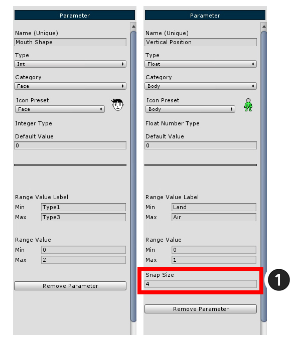

AnyPortrait > Getting Started > 1.5. Adding Control Parameters
1.5. Adding Control Parameters
1.0.0
There are two ways to control the Modifier of a Mesh Group.
One is to use Control Parameters, and the other is to use Animation Keyframes.
(You can also control the control parameters in the animation.)
Here we learn to add Control Parameters and use them in the following "modifier" step.

(1) Press the Add Control Parameter to create a Control Parameter.
After selecting the generated parameter, (2) Specify the Name of the parameter.
Now create three parameters: "Eye Shape", "Mouth Shape", and "Vertical Position".

The configuration of the control parameter setting screen is shown on the left.
1. Name : Set the parameter name. Because it serves as an ID that can be controlled by a script, you must enter a unique value.
2. Type : Set the input type. You can determine either an integer (Int), a floating-point type (Float), or a two-dimensional vector (Vector2).
3. Category : You can organize the parameters in the UI in the filter. This is the value used at this time.
4. Icon Preset : Set icon to display parameter in UI.
5. Default Value : Specify the default value.
6. Range Value Label : Name corresponding to Min and Max displayed in UI.
7. Range Value : The input range value.
8. Presets : Use pre-created parameter presets or save them as new presets.
9. Remove Control Parameter : Remove this parameter.
Enter values in the Eye Shape parameter as shown in the image above.
- The shape of the eyes has 4 images. Set the Integer type (Int) as the Type value, and enter 0 and 3 so that 4 values are included in the Range Value.

The created control parameters can be checked on the Controller tab in the left UI.
Click the Controller tab and you can see the Eye Shape parameter you just created.
1. Category : If you have too many control parameters, you can specify a filter to show only the required parameters.
2. Set Default All : Restore the values of all parameters to the default. (Settings are not reset.)
3. Control parameters : Area of registered control parameters.
4. Icon and Name : The name and icon specified in Name, Icon Preset are displayed in the above settings.
5. Set Default : Returns the current value of the parameter to the default value. In the above setting, it changes to the value corresponding to the Default Value.
6. Edit : You can go to the setting screen of the control parameter and edit it immediately.
7. Current value : Current value of the control parameter.
8. Slider : A slider that can be controlled by the mouse. For a two-dimensional vector (Vector2) type, a grid appears instead of a slider.
Let's create Control Parameters as Mouth Shape and Vertical Position.

Set the two parameters as shown above.
When the type of Vertical Position is specified as Float, (1) Snap Size appears at the bottom of the setting.
Snap Size is a value that determines the number of minutes between Min and Max. Enter 4 here.
< Reason for needing Snap Size >
If you set "Min = 0, Max = 3" for integer type (Int), you can generate key from "0", "1", "2", "3" respectively.
On the other hand, in the case of a Float and a Vector2, it is not known where to generate the key.
(This is because we do not know whether we should generate keys in 0.1 units or 0.5 units.)
Therefore, it divides the parameter range uniformly and specifies the position where the key will be placed.
If the Default Value is not included in the Snap location, there may be a problem.